A crash pad.
Or a party pad?
Larger listings and party-oriented amenities correlate with more 911 calls. The question is how to support tourism while reducing the burden on neighborhoods and emergency services.
Explore listings, capacity & calls ↗The larger the listing,
the more likely the call.
I’ve been conducting this research as part of a school project. I am a county resident, but used the City of Savannah’s records because the unincorporated county did not have an easy way to provide the 911 records.
Some smaller listings have fewer calls than the residential comparison average; larger listings and certain advertised amenities are associated with higher rates. Capacity, marketing, and how guests use a property all deserve a closer look.
These are observational associations. Calls at an address do not prove that a rental or its guests caused an incident. Small samples and wide confidence intervals limit some comparisons. Click any image to open it at full size.
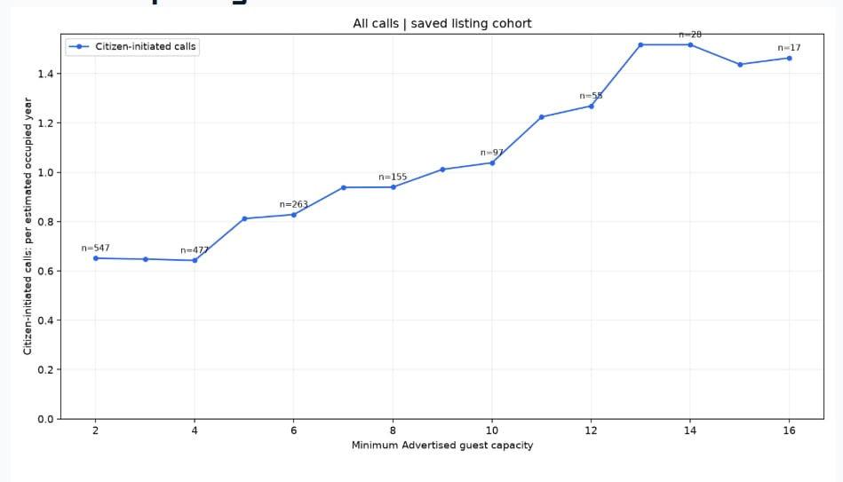
Citizen-initiated calls rise as the minimum advertised guest capacity increases. This chart uses an estimated occupied year, based on the 59% occupancy assumption in my analysis.
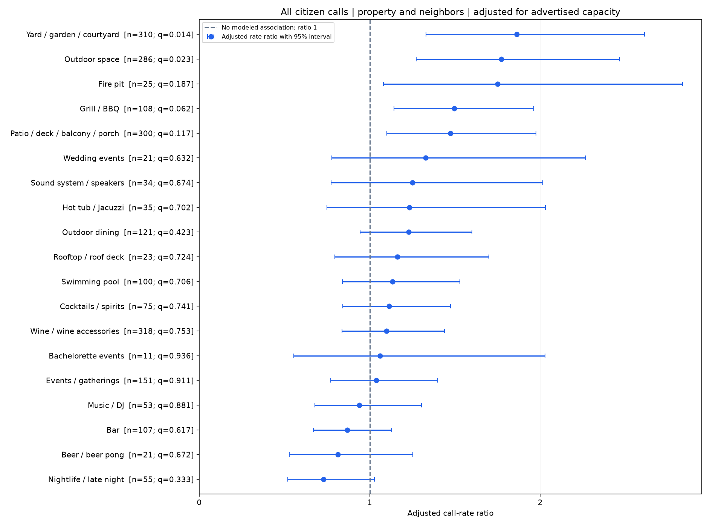
Outdoor spaces, grills, and event-oriented language are associated with higher call rates; nightlife language is associated with lower rates. Whiskers show 95% confidence intervals, and some estimates are uncertain.
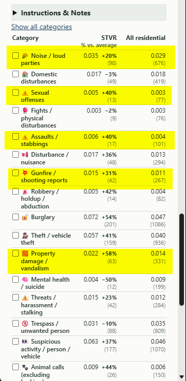
Selected call categories compared with residential parcels. The highlighted categories show elevated rates in the analysis; small samples need caution.
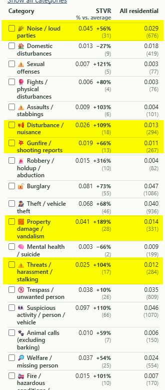
With that filter, several call-category differences become more pronounced. These are associations, not proof that guests caused an incident.
How to explore the six-guest comparison
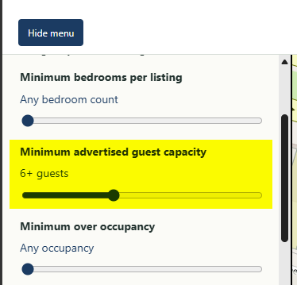
In the investigation menu, set minimum advertised guest capacity to 6+ guests.
Enjoy the city.
Spread the benefits.
Listings mentioning nightlife and nearby things to do have lower call rates in my analysis. It makes sense: if the Airbnb is a crash pad and not a party pad, there’s less partying occurring at the Airbnb itself.
Rentals that promote people spending their visit out and about enjoying the city can spread tourism dollars to local restaurants, bars, attractions, and businesses. That is a broader benefit than making the rental itself the destination for on-site partying, which can consume 911 resources and disrupt neighbors.
The call-rate association is part of this analysis. The spending pattern is a theory I’m investigating; additional research is needed to measure the economic effects.
When the rental is the destination.
520 E. Harris Street illustrates the questions I’m raising: calls associated with the parcel, a large guest capacity, a pool, and explicit marketing toward groups. I call the potential for beds to accommodate more people than listed “covert capacity.”
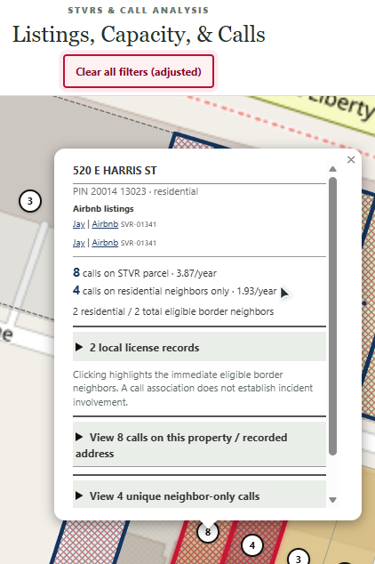
The saved map shows eight calls associated with this parcel and four separate calls on residential neighbors. A call association does not establish incident involvement.
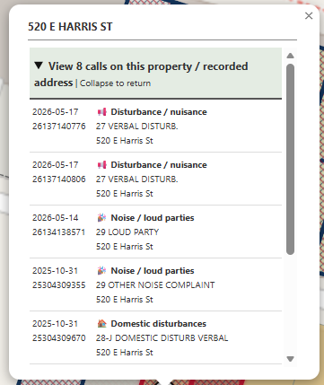
The saved call list includes disturbance, loud-party, noise, and domestic-disturbance entries. Calls for service are not findings of wrongdoing.
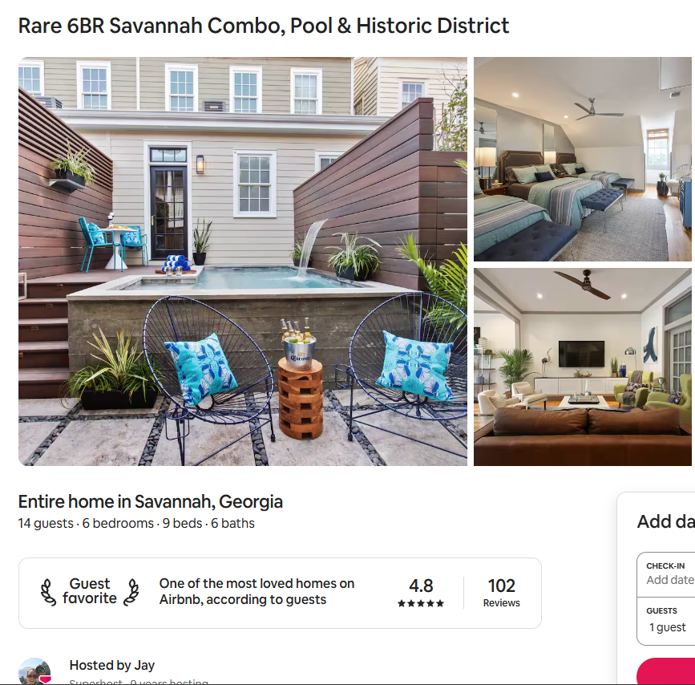
The saved listing advertises 14 guests, six bedrooms, nine beds, and a pool. Bed count raises my question about “covert capacity”; it does not establish actual occupancy or a violation.
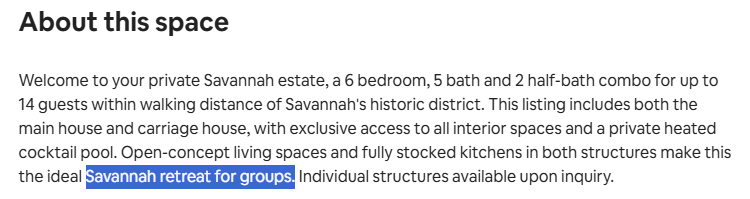
The listing describes the main house and carriage house together, with a private cocktail pool and space for up to 14 guests.
Can these rentals qualify
for homestead exemptions?
Separately, I found a property advertised as an entire-home rental whose saved license record identifies it as non-owner-occupied, while the saved tax record lists exemptions. Can the relevant offices review whether these records and exemptions are consistent?
My original email described up to 200 potential examples and a rough possible revenue shortfall of $400,000–$1 million per year. Those are unverified screening estimates, not established losses. Each property and exemption would need individual review. This is not an assertion that any owner is breaking the law.
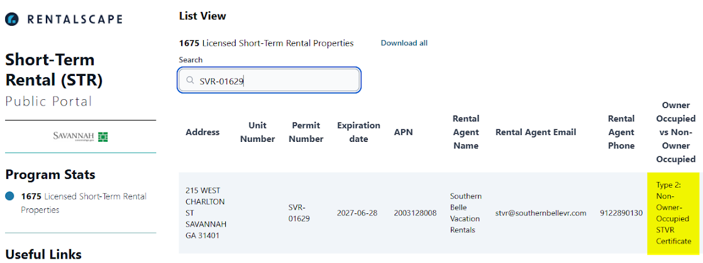
This saved city-portal record identifies 215 W. Charlton Street as a non-owner-occupied STVR. This is a different property from the Harris Street example.
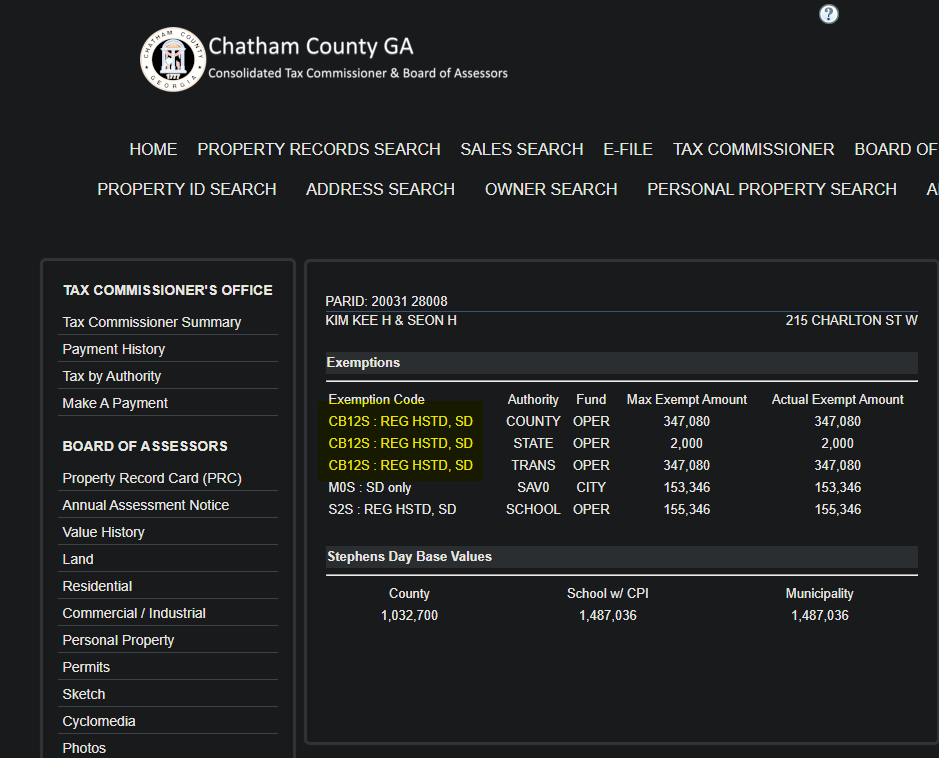
The corresponding tax screenshot lists exemptions. I am asking the city and county to verify eligibility, not asserting that an owner has broken the law.
Two advertised weekly prices from the original email
These saved quotes provide listing context; they do not show actual bookings, income, or exemption eligibility.
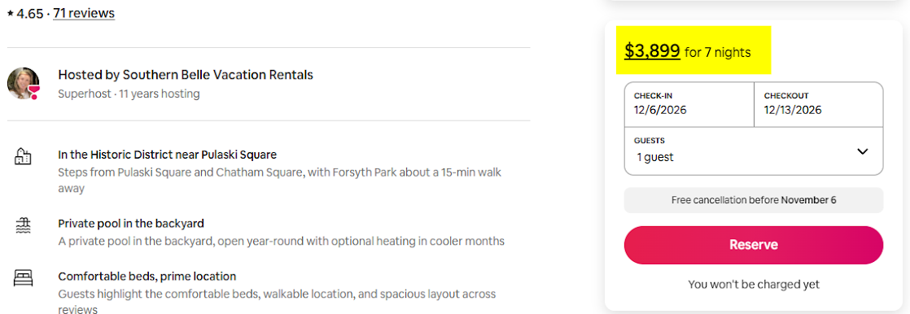
The saved quote shows $3,899 for seven nights, December 6–13, 2026. An advertised quote is not verified revenue.
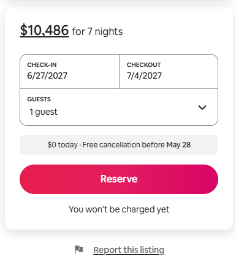
The saved quote shows $10,486 for seven nights, June 27–July 4, 2027. Prices may change; this does not establish earnings or tax eligibility.
Focus on the greatest impacts.
Consider regulations that target large-format “event” rentals, verify occupancy limits and exemption eligibility, and allocate a portion of STVR-related fine revenues to the departments bearing enforcement and response costs.
Reasonably sized rentals that operate within occupancy limits and encourage guests to enjoy Savannah deserve to be considered separately.
Explore the underlying investigation ↗About these materials
This page condenses my October 28, 2026 email to city representatives and the county tax office. Images are the saved research screenshots supplied with that email; they are snapshots, not live records. The occupancy-adjusted chart uses the 59% estimate cited in my email, not measured occupancy at every property.
Harris Street listing · Charlton Street listing · Tax-record link from the email